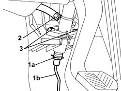
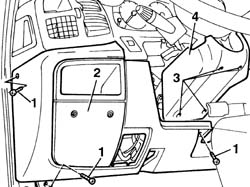
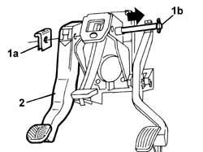

3330B26 CLUTCH PEDAL - R+R
- Path
- Procedures > 33 BRAKING SYSTEM > 3330 HYDRAULIC BRAKING SYSTEM > 3330B PEDAL UNIT > 3330B26 CLUTCH PEDAL - R+R
- Kind
- repair procedure (removal / refitting; the operation number is the code)
- Applies to
- all engines; all production periods
- Interactive page
- https://sloeber94.github.io/elrnDB-fDct/en/#/244001100
Applies to: all engines; all production periods
 Removing
Removing
 Refitting
Refitting- Position the vehicle on a lift.
- Remove the protective cap from the bleed valve on one of the front brake calipers.
- Connect the recovery device (pipe and reservoir) to the brake caliper bleed valve.
- Operate the brake pedal until the brake/clutch reservoir is drained.
1. Working from inside the vehicle, act on the locking spring (1a) and disconnect the rigid pipe (1b) from the master cylinder (pump).
2. Disconnect the pipe to the brake/clutch fluid reservoir.
3. Undo the bolts fixing the brake pump to the pedal assembly.

Applies to: all engines; all production periods
1. Undo the retaining bolts.
2. Remove the lower dashboard trim.
3. Undo the retaining bolts.
4. Remove the lower steering column trim.

Applies to: all engines; all production periods
- Disconnect the connection for the clutch pedal switch.
 | Description | Connector |
|---|---|---|
. | Clutch pedal switch | I031 |
1. Remove the fastening spring (1a) and push the pin (1b) securing the pedals to the pedal assembly.
2. Remove the clutch pedal complete with clutch pump.

Applies to: all engines; all production periods
Refitting
Removing- Fit the clutch pedal complete with clutch pump.
- Place the pin securing the pedals to the pedal assembly in the end of travel position and secure it using the spring.
- Connect the connection for the clutch pedal switch.
| Description | Connector |
|---|---|---|
. | Clutch pedal switch | I031 |
Remove the lower steering column trim.
- Fit the lower dashboard trim.
- Tighten the bolts fixing the brake pump to the pedal assembly.
- Connect the flexible pipe to the brake/clutch fluid reservoir.
- Connect the rigid pipe to the master cylinder securing it using the spring.